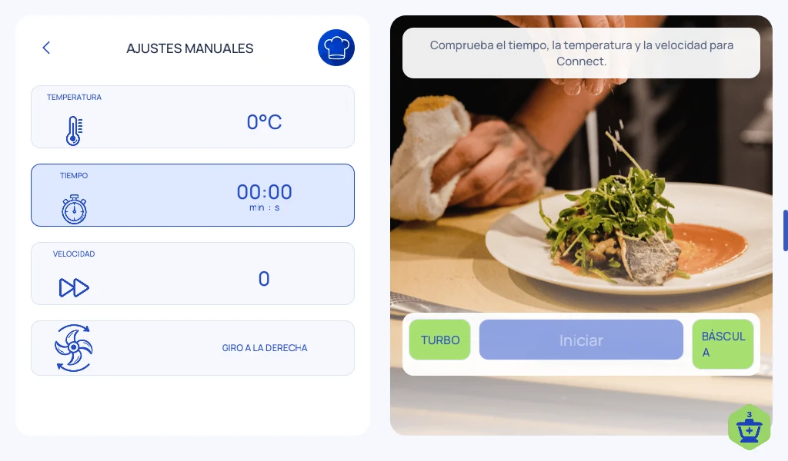
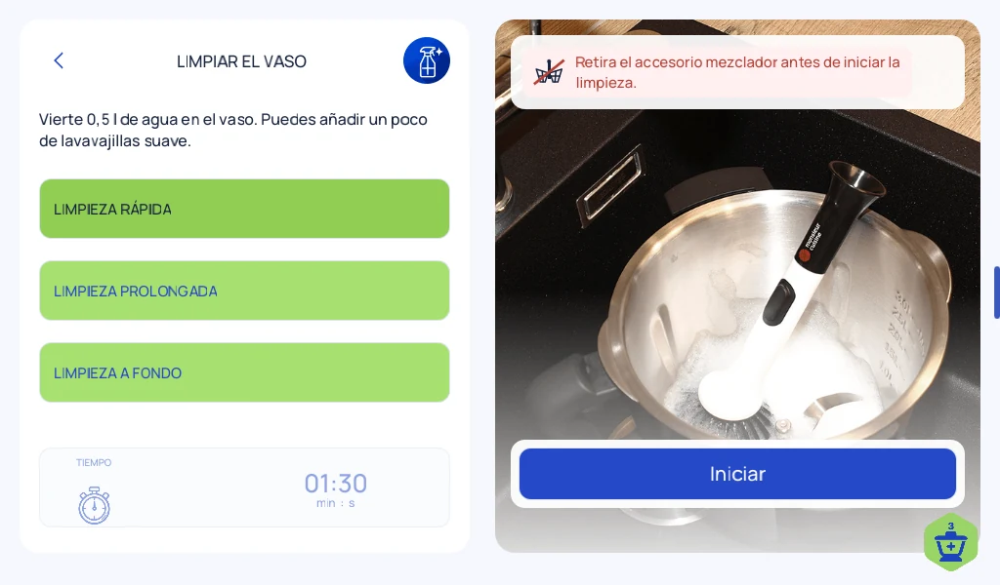
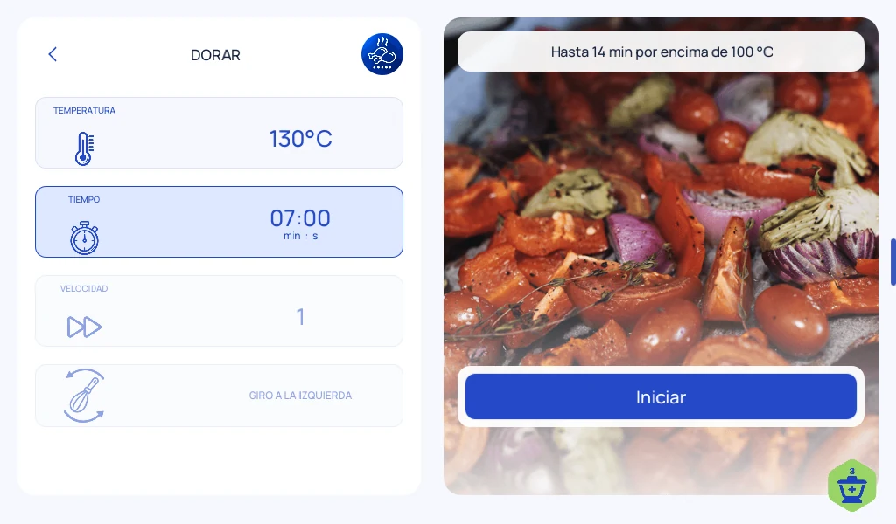
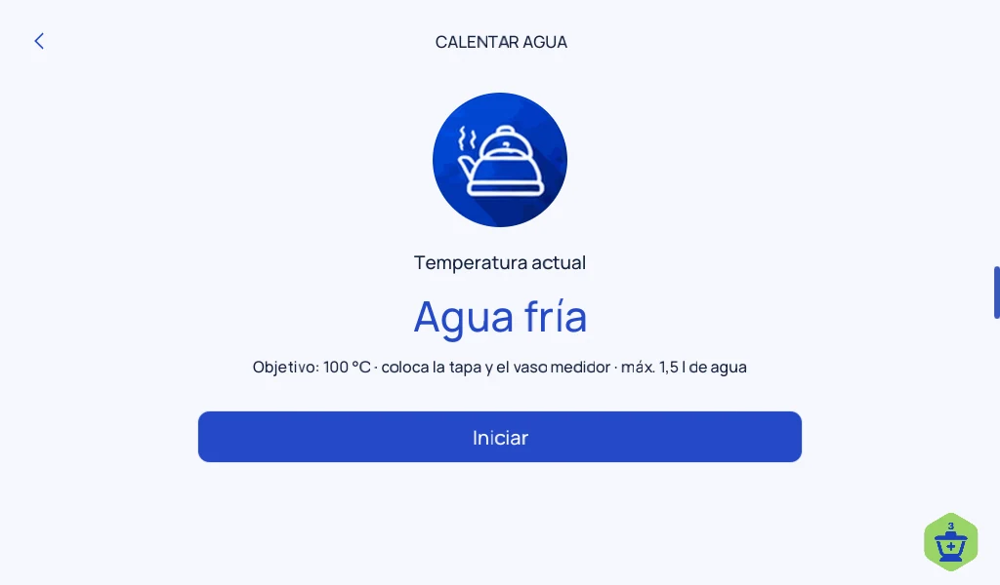
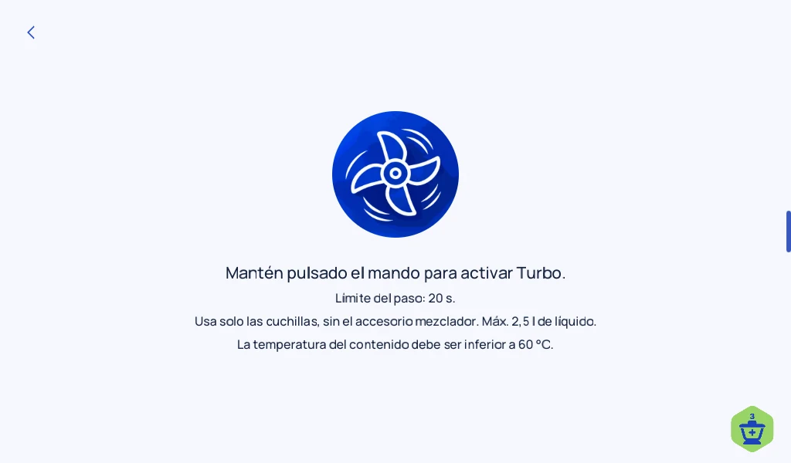
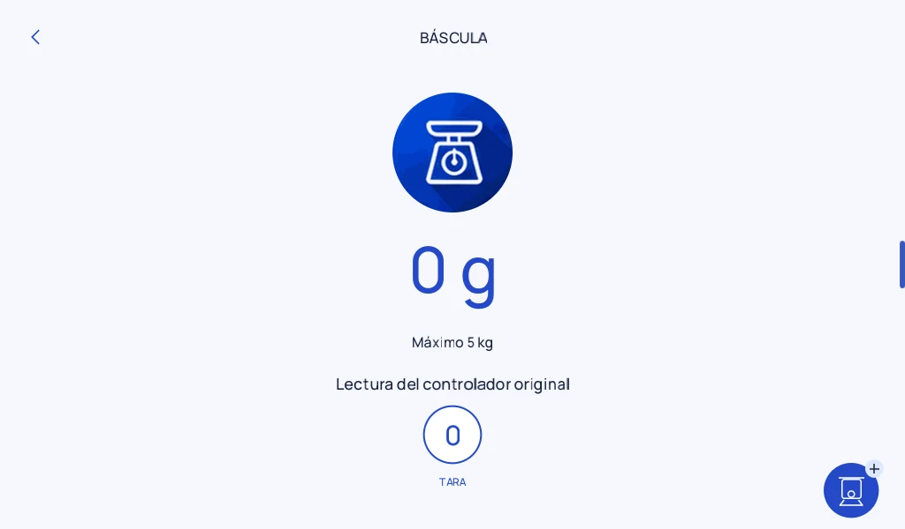
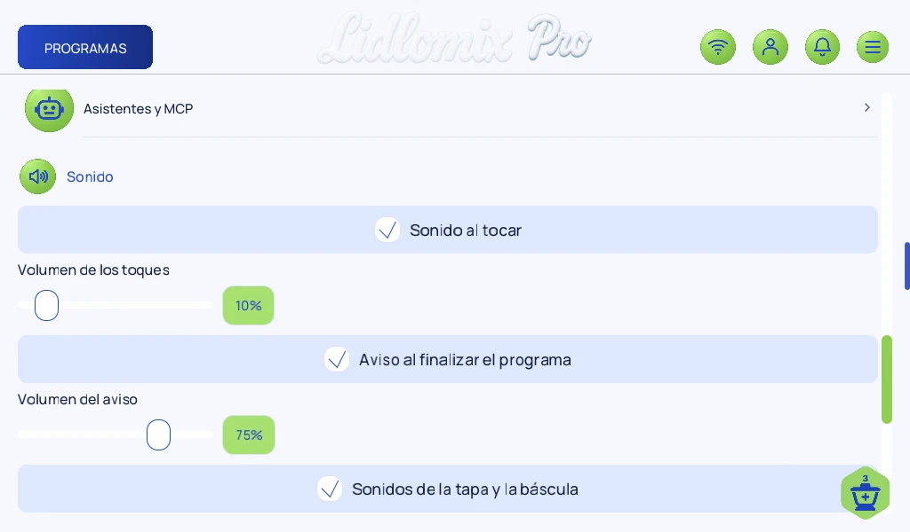

Monsieur Cuisine Connect ·
Programas, pantalla y sonido en la 0.17.8
Después de la liberación de 0.16.4 mejoré el soporte de los programas en la pantalla Connect. Usted puede ver el inicio cuando se establece el tiempo, mientras que el trabajo, se puede pausar, y el volumen de clics y la señal final se puede escuchar directamente en la configuración. A continuación, muestro cómo las pantallas han cambiado a un robot.
Comience visible al fijar el tiempo
En 0.16.4, el mensaje de configuración podría ir debajo de los botones. Moví las pistas más altas, y con las columnas de minutos y segundos añadí flechas verticales. En los editores de temperatura y velocidad, la flecha horizontal muestra la dirección del movimiento. El tiempo actual permanece en el campo izquierdo del programa.

En los programas que apoyan la pausa después de presionar Inicio aparece Pausa, y debajo de ella Stop. Después de la pausa, puede reanudar el ciclo desde la parada. La barra de acción está alineada al último campo de la izquierda. A una altura limitada, se da prioridad a los botones. En Steam Cooking, el interruptor de calor antes de contar se encuentra directamente encima de Inicio.

Prensa, horno, lavado y calefacción del agua
- El amasamiento comienza con un conjunto de 2:00 en lugar de 0:45.
- Hornear por defecto selecciona 130°C. Por encima de 100°C se puede configurar hasta 14 minutos y a 100°C o menos a 30 minutos. El cambio de temperatura mantiene el intervalo de este programa, es decir, 5 segundos de operación de cuchillas y 30 segundos de rotura en el Connect probado.
- Lavar el contenedor tiene un tercer modo, limpieza completa. La primera etapa dura 40 minutos a 60°C y 2 a la derecha. La pantalla te pide que reemplaces el agua y confirmes un corto ciclo de enjuague.
- El calentamiento del agua muestra de nuevo el icono del hervidor y la lectura de temperatura actual. Al leer debajo del rango de medición, la pantalla muestra “agua fría”.



Turbo, Peso e iconos más claros
Turbo tiene un icono más grande, un botón medio y una pista debajo de él. Mantener el pomo físico funciona el Turbo sólo en la pantalla activa del Turbo. Dejar ir el pomo para el motor. Desde el atajo todavía puede volver al programa actual o receta.

La temperatura, el tiempo, la velocidad y la dirección de la rotación tienen un eje común de valor. A la izquierda, firmas e iconos se alinean entre sí. Los textos de la interfaz usan Manrope cortado con caracteres polacos. Los iconos con los nombres del programa aumentaron de 32 a 48 píxeles, y el botón de la herramienta flotante en un 30%. Un gran icono y un mensaje de lectura más claro permanecieron en la pantalla de Peso.

Pulseras y señal final
En Ajustes → El sonido se puede encender individualmente en grifos y alarmas, así como establecer su volumen de 0 a 100%. Una vez que se libera el deslizador, se puede escuchar una muestra con el volumen seleccionado. Otra alarma de escucha sustituye al anterior. Los valores predeterminados en 00.17.8 son del 10% para grifos y del 80% para alarmas. La alarma se juega una vez después del final natural del programa.

Volver a la selección de la aplicación después de iniciar el robot
El módulo Connect 0.9 restaura el servicio de navegación de inicio rápido después de que el robot se encienda y después de las actualizaciones del módulo. Después del reinicio, Android puso el inicio de la navegación mientras que Firefox todavía estaba esperando en línea. Revisé ambos caminos en el dispositivo después del reinicio. Arrastre el mango desde el borde derecho a la izquierda regresa a la pantalla de selección tanto con Lidlomix Pro como con la aplicación de fábrica Monsieur Cuisine.

Lista de cambios de 0.16.4
- 0.16.4 — Pantallas completas de escalas, Turbo y lavado atajo, y volver al programa actual o paso de receta. Entrada anterior de descarga.
- 0.16.5 — Añadir una limpieza en tierra con enjuague después de la confirmación y restaurar la pantalla de calefacción de agua.
- 0.16.6 — Ajustes a los modos de lavado y cocción de arroz y el mensaje de ‘agua fría’.
- 0.16.7 — Inicio, Pausa, Resume y Pare en los programas de apoyo a la pausa, 2 minutos en amasamiento y tiempo de cocción más largo después de bajar la temperatura.
- 0.16.8 — visible Comience durante la edición, superposición, calefacción junto a Inicio y manejo del pomo en la pantalla del Turbo.
- 0.16.9 — más ancho Comience en barras de programa, icono de rotación más grande, y el soporte de Turbo móvil más bajo.
- 0.16.10 — pantalla Turbo centrada con un icono más grande y un grupo de consejos.
- 0.16.11 — borde inferior de la barra de acción alineada con el último parámetro campo.
- 0.16.12 — inscripciones direccionales de tiempo y velocidad.
- 0.16.13 — ejes comunes de iconos y firmas, corta Manrope y una pantalla más clara de escalas.
- 0.16.14 — teclas de flecha y sugerencias de gesto más grandes en el tiempo, temperatura y selectores de velocidad.
- 0.16.15 / 00.17.5 — iconos de cabecera más grandes en un 50%, herramientas flotantes más grandes en un 30% y un icono en el Peso. La liberación recibió el número 00.17.5 después de la numeración fue arreglada.
- Conecte módulo 0.9 — antes de ejecutar el soporte de gestos de vuelta en la puesta en marcha de robots y el inicio automático después de la actualización del módulo.
- 00.17.6 — clics, alarma de extremo de programa única y interruptores separados y deslizadores.
- 00.17.7 — mayor selección y cajas de escucha después de la diapositiva se libera, con volumen de alarma predeterminado 80%.
- 00.17.8 — El volumen del grifo predeterminado se redujo al 10%.
Probada en Connect
En el trabajo, comprobé la visibilidad de Inicio en los editores, corro y detiene el Turbo knob, regresa con un gesto de ambas aplicaciones después del reinicio, y juega un clic y una alarma después de un corto ciclo. También comprobé que la liberación de ambos deslizadores produce una muestra con el volumen seleccionado.